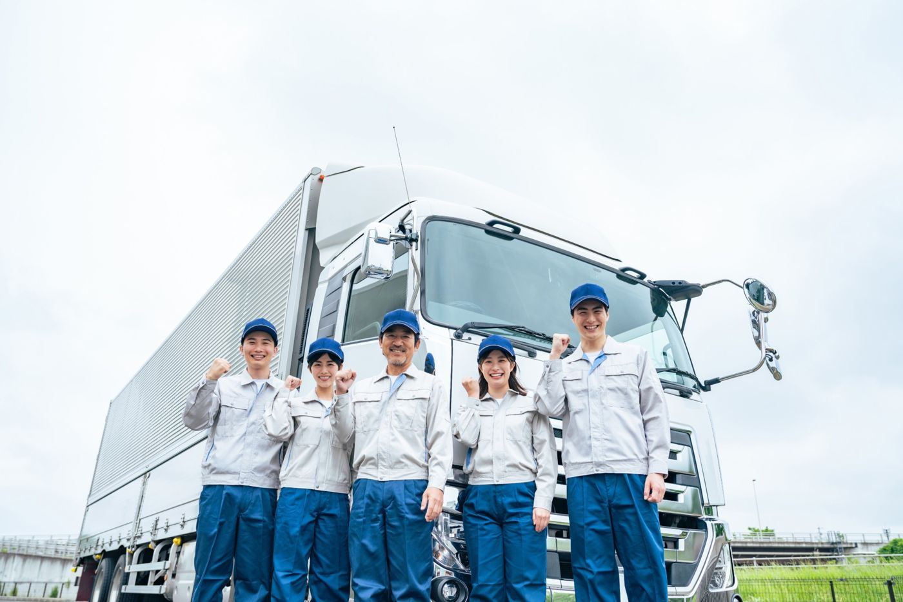

中・長距離
大型トラックの幹線輸送
<神奈川/面接1回>大型免許を活かす／運行手当あり
物流グループ企業
¥
想定年収480万円〜650万円
勤務地神奈川県 厚木市
車両大型10t
関東〜中部の拠点間を結ぶ幹線輸送です。運行距離に応じた手当がつきます。
タップして詳細を見る ›
スマホだけで、応募まで。
職務経歴書はいりません。

大型・トレーラーパソコンも、職務経歴書も、平日日中の面談もいりません。
AIが求人探しと書類づくりを手伝うので、ドライバーの方でもスマホだけで応募まで進めます。
| ドライバーJob（AI） | 一般的な転職エージェント | |
|---|---|---|
| 必要なもの | スマホだけ | パソコン・職務経歴書 |
| 使う時間 | 荷待ち・休憩・帰宅後など、好きな時間に | 平日日中の面談・電話 |
| 求人の見つけ方 | 自分でスワイプ＋AIが好みを学んで提案 | 担当者が選んだ求人の紹介を待つ |
| 応募書類 | AIが求人ごとに応募動機を作成 | 自分で一から作成 |
| 人への相談 | 必要なときだけ、専任アドバイザーに相談できる | 最初から面談が必須 |
荷待ちや休憩の合間に、スマホで求人を見られます。「毎日家に帰りたい」「手積みはしたくない」「普通免許で始めたい」など、ドライバーならではの希望で絞り込めます。
“いいね”した求人の傾向から、AIがあなたが大事にしている条件を読み取り、近い求人を提案します。自分では検索しきれない求人にも出会えます。
運転の仕事が初めてでも、AIがこれまでの仕事の経験を応募動機に言い換えます。自分で文章を考える必要はありません。
給与の内訳、荷役、運行の内容など、求人票ではわかりにくい部分をご案内します。転職活動前の相談だけでも構いません。夜間・土日のご相談も可能です。
※画面はイメージです。掲載している求人は表示例です。
ドライバーの1か月の平均賃金は36万300円。前の年から7.4%上がりました（2024年5〜7月支給分）。
2024年4月から、トラックドライバーにも時間外労働の上限（年960時間）が適用されました。拘束時間のルールも見直されています。
トラックドライバーの有効求人倍率は全職業平均の約2倍。多くの会社が採用に力を入れています。
出典：全日本トラック協会「トラック運送事業の賃金・労働時間等の実態」2024年度版／厚生労働省「時間外労働の上限規制（自動車運転の業務）」／国土交通省「トラック運送業の現状等について」
はい。求人のスワイプからAIの提案、応募、選考のサポートまで、求職者の方に費用は一切かかりません。
使えます。スマホだけで、求人探しから応募まで進められます。応募動機はAIが作成するので、文章を一から書く必要はありません。
使えます。普通免許で始められる求人や、中型・大型免許の取得を支援する求人もあります。研修や先輩の同乗がある会社を中心にご案内します。
あります。ルート配送や地場（近距離）の仕事は日帰りの運行が中心です。「毎日帰宅」の条件で絞り込めます。
使えます。年齢のみを理由にご案内をお断りすることはありません。
できます。専任のキャリアアドバイザーが、求人の詳しい条件や選考の進め方をご案内します。夜間・土日のご相談も可能です。